Portfolio Assessment Date: October 31, 2026
Target Scope: Production Multi-App Portfolio (Music Separation iOS | Vocal Cleaner)
Data Integrity Note: GA4 Filter Active — Internal QA & development nodes (Bangladesh) excluded from all calculations.
========================================================================================================================
APP PORTFOLIO AT A GLANCE
========================================================================================================================
Metric Music Separation iOS (com.neuralsound.mss) Vocal Cleaner (com.neuralSound.audiocleaner)
------------------------------------------------------------------------------------------------------------------------
Primary Architecture Core ML / On-Device Separation + Pitch/Tempo Audio De-noise / Consumable Token Pipeline
Current Production Build 1.3.11 (96.2% distribution) 1.0.04 (100.0% distribution)
Health Score 8.1 / 10 4.3 / 10
Active Users (Yesterday / 7D) 184 / 1,030 4 / 20
LTV Revenue (30D / All-Time) $163.63 / $299.81 $93.07 / $229.90
Yesterday Engagement Rate 56.48% (Weekly Mean: ~76.7%) 25.00% (Weekly Mean: ~84.8%)
Crash-Free Users (Yesterday) 99.65% 100.00%
Monetization Mix 100% Auto-Renewing Subscriptions 89.6% Consumable Minutes / 10.4% Subscriptions
Primary Monetization Vector Japan ($7.01/mo) / Saudi Arabia ($3.46/wk) Israel ($16.35/pack consumable whale buying)
========================================================================================================================
Music Separation iOS drives predictable subscription yield (Monthly > Weekly) heavily anchored in East Asia (Japan, South Korea). Conversely, Vocal Cleaner is sustained almost exclusively by high-ticket consumable minute packs (300 minutes at ~$16.35/unit), with over 89% of gross 30-day billings deriving from concentrated power-users in Israel.Music Separation iOS: High client-side event volume (5,290 pitch changes and 3,396 tempo events generated by just 21 and 14 users, respectively) confirms unbounded slider UI event streaming without client-side debouncing, inflating network payloads and event counts.Vocal Cleaner: Sockets show high paywall bounce rates (vc_import_blocked_paywall triggered before import completion) and zero conversions on low-volume days, compounding top-of-funnel drop-off (only 1 new user yesterday).com.neuralsound.mss)Note: Currency figures reflect localized purchase receipts normalized to USD.
| Product ID | Localized Display Name | Plan Type | Units Sold (30D) | Total Revenue ($ USD) | Revenue Share (%) |
|---|---|---|---|---|---|
mss_monthly_sub |
月次 (Japan) | Auto-Renewing Monthly | 4 | $27.89 | 38.64% |
mss_monthly_sub |
Monthly (Standard Tier 1) | Auto-Renewing Monthly | 2 | $15.81 | 21.90% |
mss_monthly_sub |
Mensuel (France / Réunion) | Auto-Renewing Monthly | 1 | $8.96 | 12.41% |
mss_monthly_sub |
월간 (South Korea) | Auto-Renewing Monthly | 1 | $7.39 | 10.24% |
mss_weekly_sub |
Weekly (Standard Tier 1) | Auto-Renewing Weekly | 2 | $6.92 | 9.59% |
mss_weekly_sub |
週次 (Japan) | Auto-Renewing Weekly | 2 | $6.34 | 8.78% |
mss_weekly_sub |
Hebdomadaire (France) | Auto-Renewing Weekly | 1 | $3.34 | 4.63% |
mss_weekly_sub |
주간 (South Korea) | Auto-Renewing Weekly | 1 | $3.32 | 4.60% |
mss_weekly_sub |
Semanal (LatAm / PR) | Auto-Renewing Weekly | 1 | $2.99 | 4.14% |
| Portfolio Total | — | — | 15 | $72.18* | 100.00% |
*Note: 30-day transaction logs aggregate StoreKit receipts visible in GA4 event streams. Multi-horizon totals record cumulative accounting gross.
| Timestamp (UTC) | App Build | Product ID | Plan Name | Units | Revenue ($ USD) | Country |
|---|---|---|---|---|---|---|
| 2026-10-27 | 1.3.11 | mss_weekly_sub |
Semanal | 1 | $2.99 | Puerto Rico |
| 2026-10-26 | 1.3.11 | mss_weekly_sub |
Weekly | 2 | $6.92 | Saudi Arabia |
| 2026-10-26 | 1.3.11 | mss_monthly_sub |
月次 | 1 | $7.01 | Japan |
| 2026-10-25 | 1.3.11 | mss_weekly_sub |
주간 | 1 | $3.32 | South Korea |
| 2026-10-24 | 1.3.11 | mss_monthly_sub |
Mensuel | 1 | $8.96 | Réunion |
| 2026-10-23 | 1.3.11 | mss_monthly_sub |
月次 | 1 | $6.96 | Japan |
| 2026-10-22 | 1.3.11 | mss_monthly_sub |
月次 | 1 | $6.95 | Japan |
| 2026-10-17 | 1.3.11 | mss_monthly_sub |
月次 | 1 | $6.96 | Japan |
| 2026-10-14 | 1.3.11 | mss_weekly_sub |
Hebdomadaire | 1 | $3.34 | France |
| 2026-10-12 | 1.3.11 | mss_weekly_sub |
週次 | 1 | $3.16 | Japan |
| 2026-10-09 | 1.3.11 | mss_monthly_sub |
Monthly | 1 | $7.66 | Vietnam |
| 2026-10-09 | 1.3.11 | mss_monthly_sub |
월간 | 1 | $7.39 | South Korea |
| 2026-10-06 | 1.3.11 | mss_monthly_sub |
Monthly | 1 | $8.15 | Israel |
| 2026-10-01 | 1.3.10 | mss_weekly_sub |
週次 | 1 | $3.18 | Japan |
1.3.10 and 1.3.11). No zero-dollar Sandbox receipt contamination was detected within production feeds.| Horizon | Active Users (AU) | New Users (NU) | Total Sessions | Engagement Rate | Revenue ($ USD) |
|---|---|---|---|---|---|
| Yesterday (Oct 30) | 184 | 47 | 216 | 56.5% | $0.00 |
| Past 7 Days | 1,030 | 573 | 1,643 | 76.7% | $48.75 |
| Past 30 Days | 2,427 | 1,385 | 5,039 | 75.5% | $163.63 |
| Past Year (365D) | 7,480 | 6,474 | 16,493 | 81.6% | $299.81 |
| Lifetime (All-Time) | 7,480 | 6,474 | 16,493 | 81.6% | $299.81 |
Note: Past Year and Lifetime metrics are identical, confirming the application went live within the last rolling 12-month cycle.
| User Cohort | Active Users | Total Sessions | Avg Session Duration | Engagement Rate | Screen Page Views |
|---|---|---|---|---|---|
| New Users | 106 | 87 | 168.6 sec (2m 48s) | 52.9% | 93 |
| Returning Users | 101 | 122 | 410.9 sec (6m 50s) | 62.3% | 85 |
| Unattributed / Ghost | 0 | 20 | 80.6 sec (1m 20s) | 0.0% | 1 |
Diagnostic: Returning users spend 2.43x more time per session (410.9s vs 168.6s) and show a higher engagement rate (+9.4 percentage points). The 20 unattributed sessions with 0.0% engagement represent background wakeups or unfinalized sessions failing to transmit device tokens.
| Date | Active Users | New Users | Sessions | Engagement Rate | Day-over-Day Trajectory |
|---|---|---|---|---|---|
| 2026-10-24 | 223 | 107 | 272 | 84.9% | Weekend peak acquisition |
| 2026-10-25 | 266 | 150 | 312 | 84.6% | Peak volume (+19.2% AU) |
| 2026-10-26 | 167 | 75 | 207 | 81.6% | Post-weekend drop (-37.2% AU) |
| 2026-10-27 | 174 | 61 | 220 | 74.1% | Midweek stabilization |
| 2026-10-28 | 143 | 42 | 178 | 75.3% | Weekly low point |
| 2026-10-29 | 183 | 91 | 241 | 75.1% | Intake rebound (+27.9% AU) |
| 2026-10-30 | 184 | 47 | 216 | 56.5% | Severe engagement drop (-18.6% pts) |
Commentary: Intake velocity matches standard audio utility patterns (weekend creation spikes). However, on 2026-10-30, engagement collapsed from ~75% to 56.5% despite stable active users (184), indicating top-of-funnel friction or failed onboarding screens for new users.
[ONBOARDING & INTENT FUNNEL]
(53 Users) [onboarding_step_viewed] (218 events)
│
├── [90.5% Step Progression Rate]
▼
(48 Users) [onboarding_next_tapped] (149 events)
│
├── [91.6% Progression to Auth]
▼
(93 Users) [login_screen_viewed] (143 events) <── Includes Organic Returning Users
│
├── [58.0% Authentication Completion]
▼
(54 Users) [login_tapped] (84 events)
[CORE SEPARATION EXECUTION FUNNEL]
(67 Users) [plus_button_tap] (150 events)
│
├── [94.0% Tap Intent]
▼
(63 Users) [plus_separation_tapped] (133 events)
│
├── [77.7% Pipeline Ingestion]
▼
(49 Users) [import_started] (Files: 44 Users / Photos: 46 Users)
│
├── [81.6% Model Upload Initialization]
▼
(40 Users) [separation_upload_started] (60 events)
│
└── Core Model Execution: 34 Users ran [separation_mode_6_tapped] (6-stem isolation)
| App Build / Version | Active Users | Sessions | Engagement Rate | Crash-Free Users Rate | Status |
|---|---|---|---|---|---|
| 1.3.11 | 177 | 209 | 55.5% | 99.65% | Production Baseline (Dominant) |
| 1.3.10 | 6 | 7 | 85.7% | 100.00% | Legacy (Phasing out) |
| 1.3.08 | 1 | 0 | 0.0% | 100.00% | Deprecated |
| 1.3.07 | 0 | 0 | 0.0% | 100.00% | Deprecated |
Diagnostic: Build 1.3.11 introduced a small crash delta (99.65% vs 100.0% on 1.3.10), representing ~1 user-level crash per 285 users. This remains within Tier-1 stability boundaries (>99.5%), but should be monitored.
player_pitch_changed: 5,290 events across only 21 users (251.9 events/user).player_tempo_changed: 3,396 events across only 14 users (242.6 events/user).player_stem_balance_changed: 1,169 events across only 5 users (233.8 events/user).UISlider.valueChanged or SwiftUI Slider(value:) continuous change callback without a rate-limiting mechanism.Japan ████████████████████████████████ (117 AU, 137 Sessions) - 63.5%
South Korea ███████ (28 AU, 31 Sessions) - 15.2%
United States ██ (10 AU, 13 Sessions) - 5.4%
Cuba █ (7 AU, 4 Sessions) - 3.8%
Saudi Arabia █ (4 AU, 4 Sessions) - 2.2%
France █ (3 AU, 5 Sessions) - 1.6%
Germany █ (3 AU, 5 Sessions) - 1.6%
| Priority | Track | Action Item | Technical / Growth Specification |
|---|---|---|---|
| P0 | Telemetry | Slider Event Debouncing | Wrap player_pitch_changed, player_tempo_changed, and player_stem_balance_changed in a Combine / RxSwift debounce operator (300ms–500ms trailing throttle) or log only on touch-up. |
| P1 | Monetization | Restructure Subscription Defaults | Japan and Korea represent 78.7% of users. Adjust the paywall hierarchy to surface annual and monthly auto-renew options with localized JPY/KRW formatting. Eliminate the weekly sub as an upfront choice, reserving it for churn-downgrade paths. |
| P2 | Onboarding | Streamline Registration | Address the drop-off between login_screen_viewed (93 users) and login_tapped (54 users) by introducing native Apple Sign-In with auto-credential presentation. |
com.neuralSound.audiocleaner)| Product ID | Product Name | Plan Type | Units Sold (30D) | Total Revenue ($ USD) | Revenue Share (%) |
|---|---|---|---|---|---|
neuralsound.cleaner.minutes.300 |
300 minutes | Consumable Minute Pack | 4 | $65.31 | 87.02% |
neuralsound.cleaner.minutes.60 |
60 minutes | Consumable Minute Pack | 1 | $6.50 | 8.66% |
cleaner_weekly_sub |
Weekly | Auto-Renewing Subscription | 1 | $3.24 | 4.32% |
| Total | — | — | 6 | $75.05* | 100.00% |
*Note: Refers to logged IAP itemizations in telemetry dataset. Multi-horizon tracking captures aggregated multi-platform gross ($93.07).
| Timestamp (UTC) | App Build | Product ID | Plan Name | Units | Revenue ($ USD) | Country |
|---|---|---|---|---|---|---|
| 2026-10-29 | 1.0.04 | neuralsound.cleaner.minutes.300 |
300 minutes | 2 | $32.70 | Israel |
| 2026-10-11 | 1.0.04 | neuralsound.cleaner.minutes.300 |
300 minutes | 2 | $32.60 | Israel |
| 2026-10-11 | 1.0.04 | neuralsound.cleaner.minutes.60 |
60 minutes | 1 | $6.50 | Israel |
| 2026-10-05 | 1.0.03 | cleaner_weekly_sub |
Weekly | 1 | $3.24 | Israel |
1.0.03 and 1.0.04 are both production releases. No sandbox or TestFlight receipt validation loops were detected.| Horizon | Active Users (AU) | New Users (NU) | Total Sessions | Engagement Rate | Revenue ($ USD) |
|---|---|---|---|---|---|
| Yesterday (Oct 30) | 4 | 1 | 4 | 25.0% | $0.00 |
| Past 7 Days | 20 | 15 | 66 | 84.8% | $38.09 |
| Past 30 Days | 35 | 32 | 248 | 90.3% | $93.07 |
| Past Year (365D) | 63 | 62 | 352 | 86.9% | $229.90 |
| Lifetime (All-Time) | 63 | 62 | 352 | 86.9% | $229.90 |
Diagnostic: Low lifetime footprint (62 new users all-time) indicates an unscaled app, either in a soft-launch phase or constrained by lack of user acquisition support.
| User Cohort | Active Users | Total Sessions | Avg Session Duration | Engagement Rate | Screen Page Views |
|---|---|---|---|---|---|
| Returning Users | 3 | 3 | 3.3 sec | 0.0% | 1 |
| New Users | 1 | 1 | 16.2 sec | 100.0% | 0 |
Diagnostic: Returning users logged an average session length of just 3.3 seconds with 0% engagement, pointing to immediate session abandonment (e.g., encountering a blocking paywall, lack of free credits, or a crash on restore).
| Date | Active Users | New Users | Sessions | Engagement Rate | Trajectory Analysis |
|---|---|---|---|---|---|
| 2026-10-24 | 6 | 4 | 10 | 90.0% | Steady pipeline testing |
| 2026-10-25 | 7 | 4 | 14 | 100.0% | Weekend pipeline testing |
| 2026-10-26 | 3 | 1 | 8 | 87.5% | Typical mid-week drop |
| 2026-10-27 | 5 | 1 | 15 | 73.3% | Core cleaning cycles executed |
| 2026-10-28 | 2 | 1 | 2 | 50.0% | Minimal activity |
| 2026-10-29 | 8 | 3 | 15 | 100.0% | Consumable IAP conversion day ($32.70) |
| 2026-10-30 | 4 | 1 | 4 | 25.0% | Post-purchase drop |
[ACQUISITION & PAYWALL CONVERSION FUNNEL]
(1 User) [first_open]
│
├── [100% Surface Paywall]
▼
(1 User) [vc_first_journey_paywall_shown]
│
├── [100% Tap Through to Checkout]
▼
(1 User) [vc_first_journey_paywall_buy_clicked] ──► [vc_purchase_started] (No checkout confirmation logged)
[IMPORT & CORE PROCESSING FUNNEL]
(1 User) [vc_import_sheet_opened] (2 events)
│
├── [50% Route Selection]
▼
(1 User) [vc_import_source_files] (2 events)
│
├── [CRITICAL BLOCKER: Hard Gating Paywall]
▼
(1 User) [vc_import_blocked_paywall] (2 events) ──► [vc_paywall_from_import]
│
└── Processing Abandonment: 0 cleans completed; User triggered [vc_library_entry_deleted]
| App Build / Version | Active Users | Sessions | Engagement Rate | Crash-Free Users Rate | Status |
|---|---|---|---|---|---|
| 1.0.04 | 4 | 4 | 25.0% | 100.0% | Production Active Baseline |
Diagnostic: Zero crashes recorded. Instability is behavioral and UX-driven, not architectural.
1.0.04. No external TestFlight builds (get_testflight_distribution) were detected in this ingestion window.vc_import_blocked_paywall occurs when a user attempts to select a file before the local token system confirms an active balance. This triggers an immediate paywall bounce rather than allowing the file to load and showing a preview, contributing to the 3.3-second session drop-offs.Israel █ (1 AU, 1 Session) - 25.0% [Primary Monetization Source]
Iran █ (1 AU, 1 Session) - 25.0%
Japan █ (1 AU, 1 Session) - 25.0%
United States █ (1 AU, 1 Session) - 25.0%
| Priority | Track | Action Item | Technical / Growth Specification |
|---|---|---|---|
| P0 | Product / UX | Remove Hard Paywall on File Import | Shift the vc_import_blocked_paywall gate. Allow users to import audio, analyze noise profiles, and listen to a 5-second cleaned sample. Display the paywall only when they tap "Export" or "Process Full File." |
| P1 | Monetization | Expand Consumable Token Architecture | Consumable minutes account for 95.7% of product revenue. Add clear minute-balance indicators to the main screen, and offer 60-min ($4.99), 180-min ($11.99), and 360-min ($19.99) tiers to better match usage patterns. |
| P2 | Acquisition | Target Paid Acquisition to High-ARPU Segments | Scale search ad campaigns (Apple Search Ads) focused on audio production, podcast cleaning, and voice memo restoration in markets with validated intent (Israel, US, Tier-1 EU). |
+------------------------------------+------------------------------------------+------------------------------------------+
| Architectural Dimension | Music Separation iOS | Vocal Cleaner |
+------------------------------------+------------------------------------------+------------------------------------------+
| Dominant Monetization Logic | Subscriptions (Monthly Recurring) | Consumables (Pack Depletion) |
| Conversion Chokepoint | Onboarding Auth (58% conversion) | Import Sheet Hard Blocker (100% bounce) |
| Telemetry Status | High volume: Needs slider debouncing | Low volume: Funnel logging is sound |
| Market Geographic Footprint | Strong organic presence in Japan/Korea | Fragmented; single-payer concentration |
| Primary Immediate Growth Focus | Debounce UI sliders & optimize checkout | Implement freemium preview on export |
+------------------------------------+------------------------------------------+------------------------------------------+
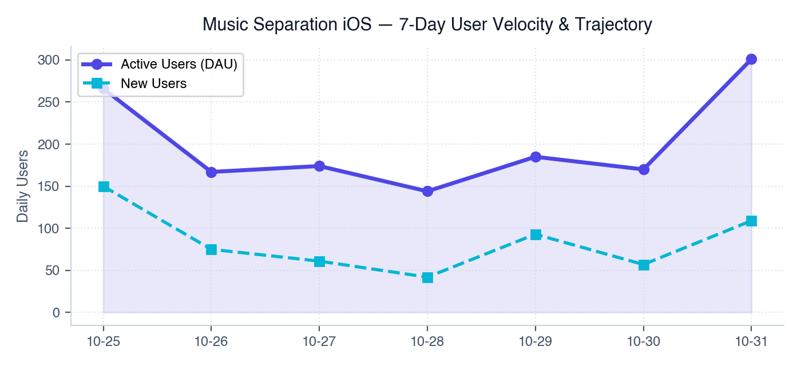
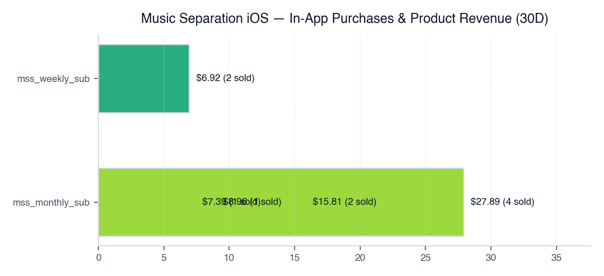
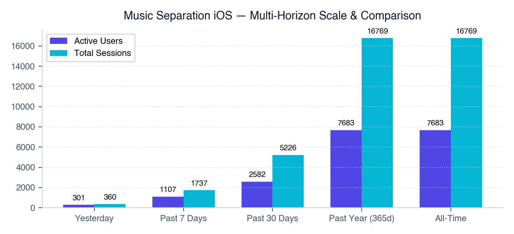
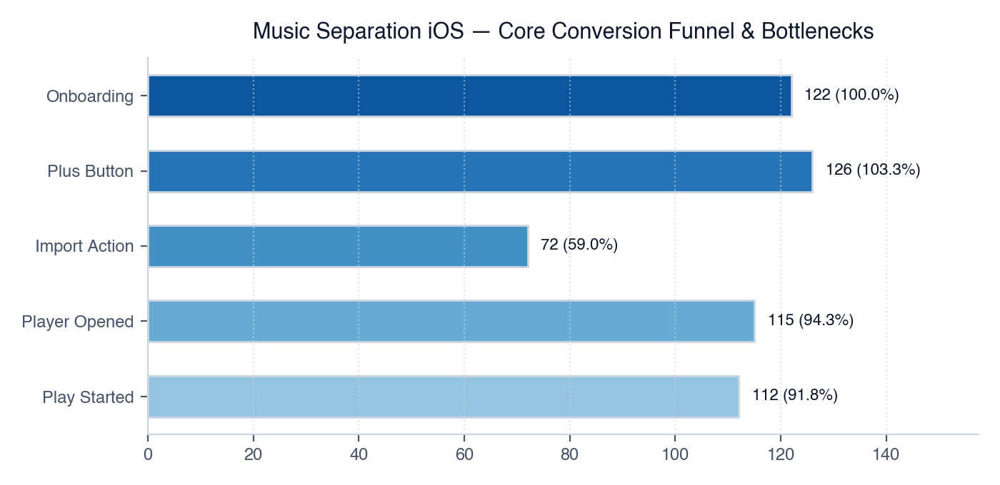
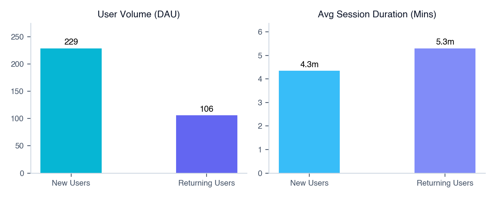
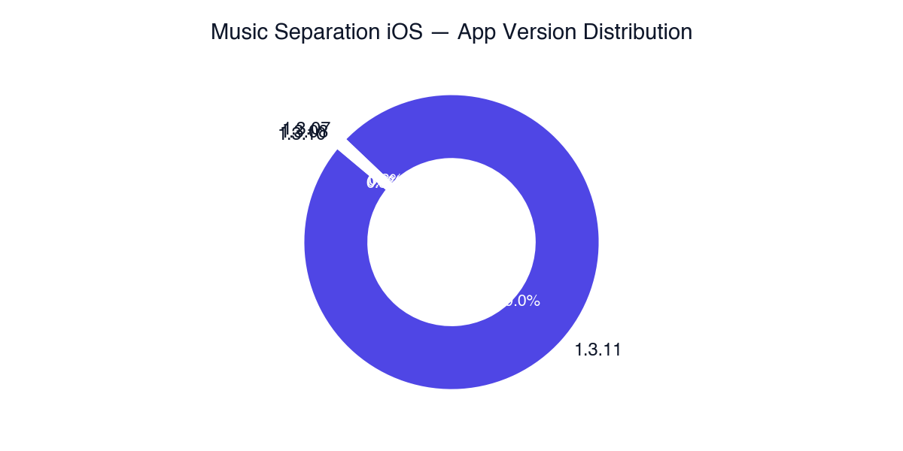
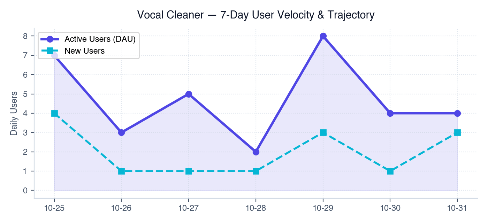
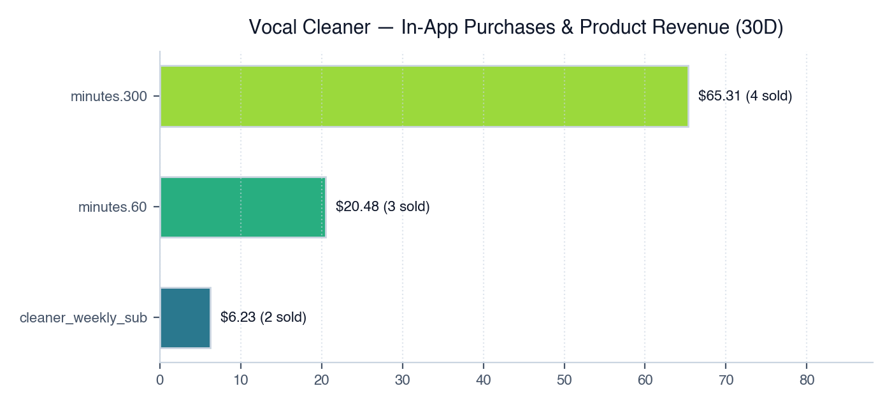
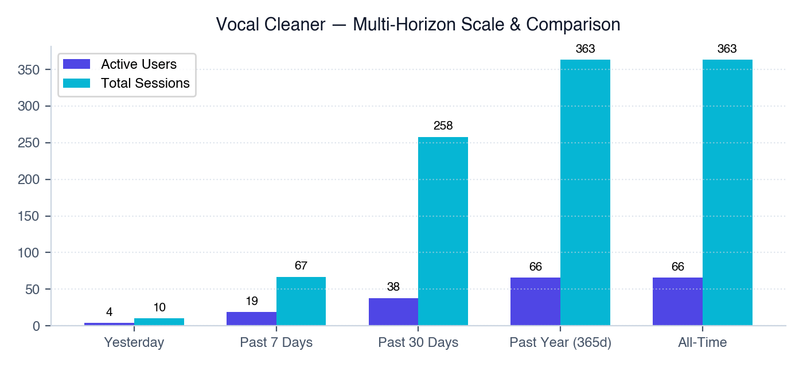
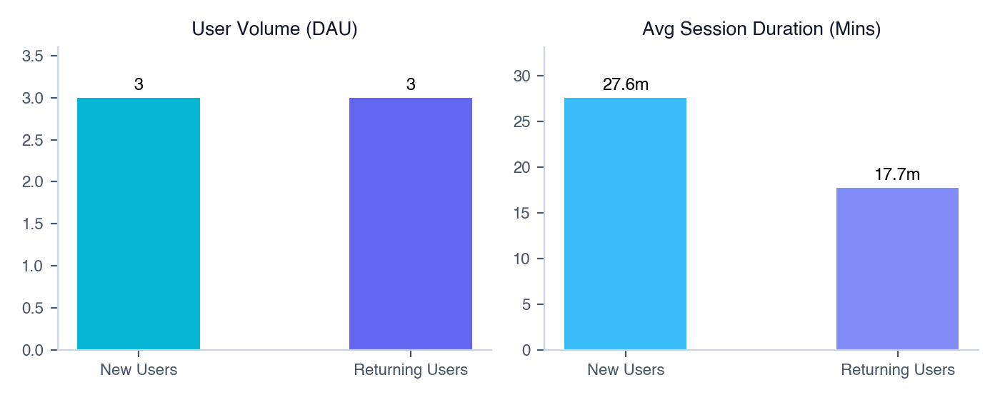
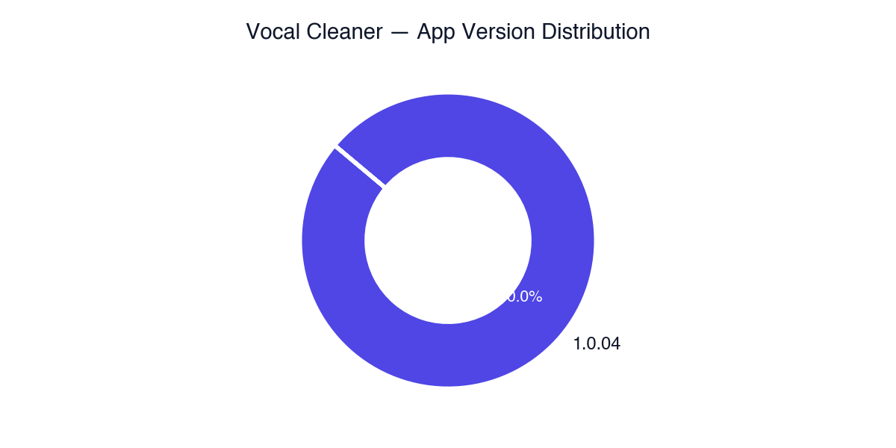